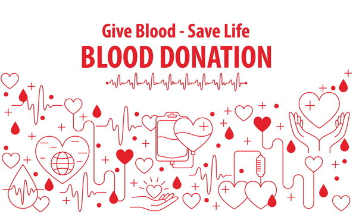
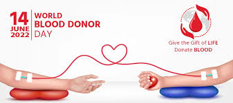
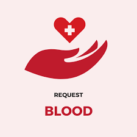

Why Should I Donate the Blood?
Blood donors save lives. Volunteer blood donors provide 100 percent of our community’s blood supply. Almost all of us will need blood products.
Who can Donate Blood?
Generally, you are eligible to donate if you are 16 years of age or older, weigh at least 110 pounds and are in good health. Donors under 18 must have written permission from a parent or guardian prior to donation.
Does it hurt to give blood?
The sensation you feel is similar to a slight pinch on the arm. The process of drawing blood should take less than ten minutes.

HOW DO I PREPARE FOR A BLOOD DONATION?
We recommend that donors be well rested, eat a healthy meal, drink plenty of fluids and avoid caffeine and alcohol prior to donating.
WHAT CAN I EXPECT WHEN I DONATE?
At every donation, you will fill out a short health history questionaire. You will also receive a mini-physical, which includes checking your pulse, blood pressure, temperature and iron level. From registration to juice and cookies, the entire process takes 40–50 minutes.
WHERE IS MY BLOOD USED?
CRBS supplies blood to MultiCare Health System and Franciscan Health System hospitals and clinics in Pierce and South King Counties. CRBS also participates in national resource sharing programs.

CAN I donate if I am on medication?
An adult has about 10–11 pints.
HOW MUCH BLOOD WILL I donate?
Whole blood donors give 500 milliliters, about one pint.
WHAT HAPPENS TO BLOOD AFTER I donate?
Your blood is tested, separated into components, then distributed to local hospitals and trauma centers for patient transfusions.
